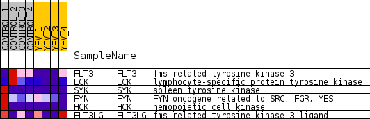
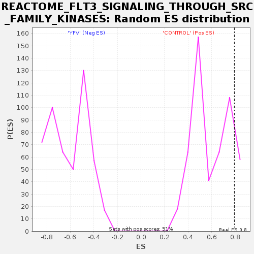

Profile of the Running ES Score & Positions of GeneSet Members on the Rank Ordered List
| Dataset | MATRIZ_GSE99081_collapsed_to_symbols.gsea_CLASE_99081.cls#CONTROL_versus_YFV |
| Phenotype | gsea_CLASE_99081.cls#CONTROL_versus_YFV |
| Upregulated in class | CONTROL |
| GeneSet | REACTOME_FLT3_SIGNALING_THROUGH_SRC_FAMILY_KINASES |
| Enrichment Score (ES) | 0.7951103 |
| Normalized Enrichment Score (NES) | 1.3335986 |
| Nominal p-value | 0.11372549 |
| FDR q-value | 0.98715633 |
| FWER p-Value | 1.0 |
| SYMBOL | TITLE | RANK IN GENE LIST | RANK METRIC SCORE | RUNNING ES | CORE ENRICHMENT | |
|---|---|---|---|---|---|---|
| 1 | FLT3 | fms-related tyrosine kinase 3 | 1385 | 0.553 | 0.1910 | Yes |
| 2 | LCK | lymphocyte-specific protein tyrosine kinase | 1591 | 0.510 | 0.4331 | Yes |
| 3 | SYK | spleen tyrosine kinase | 1865 | 0.499 | 0.6655 | Yes |
| 4 | FYN | FYN oncogene related to SRC, FGR, YES | 2773 | 0.371 | 0.7951 | Yes |
| 5 | HCK | hemopoietic cell kinase | 7242 | 0.000 | 0.5199 | No |
| 6 | FLT3LG | fms-related tyrosine kinase 3 ligand | 10622 | -0.069 | 0.3460 | No |

